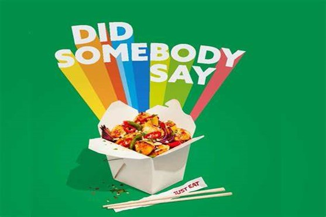
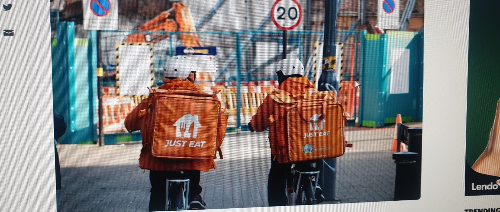
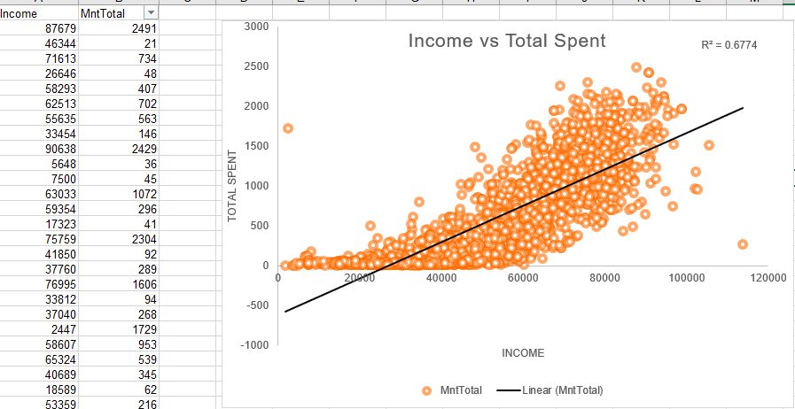
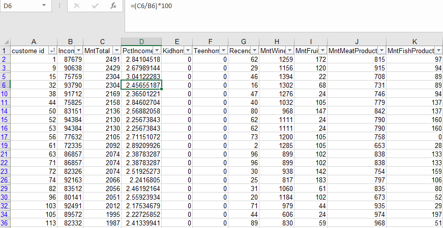
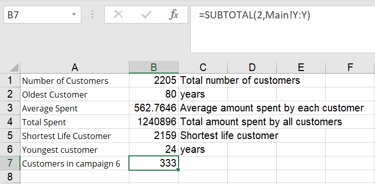
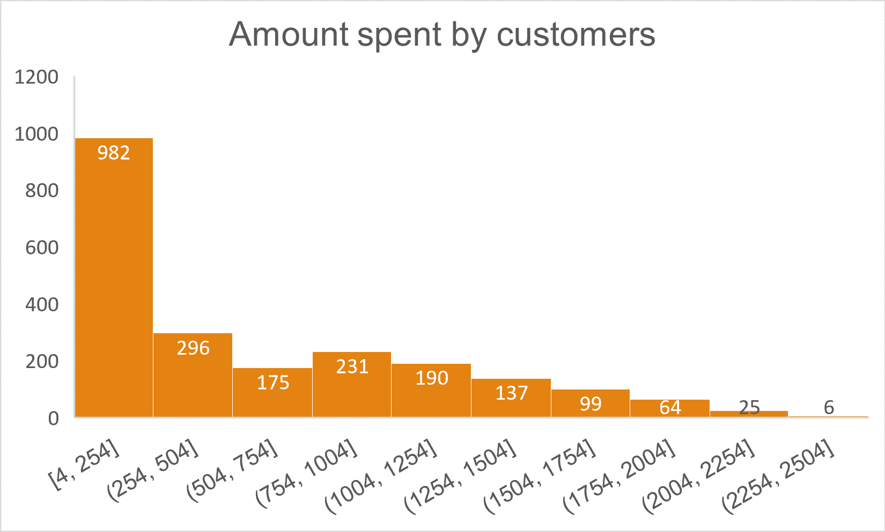
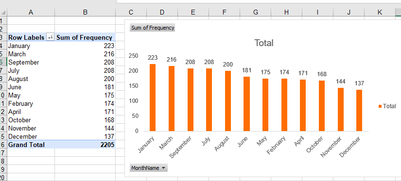

MARKETING PROJECT
This project is actually modified from an iFood job interview case study given by the Brazilian equivalent
of JUST EAT, iFood. The data is 98% real, but slightly modified for educational purposes. Food delivery
companies are constantly carrying out campaigns because the market is very competitive and innovative.
Just Eat has witnessed a drop in sales in the recent time. I was asked to analyse their data and look for
insights management can use to gain customers, build trust and establish credibility. How can this be
achieved? I formulated some questions which shall be answered in the course of the project.
It is a two years (2014-2016) data and is presented in the form of an excel spreadsheet and made up of
2206 columns and 36 rows. I had to spend some time go over the data to make sure it was well understood
and that there were no duplicates, spelling errors, missing entries etc. Data cleaning is the bases to obtain
a good insight.
The main goal of this project was to look for business opportunities and insights and to propose any data
driven actions to optimise the outcomes of the campaigns.
But in order to arrive at the recommendations, I had to answer some specific questions that will guide me
in arriving to the conclusion of the project.
- How has purchased been following a marketing campaign?
- How much did the top person spend?
- How many customers were there (still for campaign 6)?
- How old is the oldest customer?
- What is the average amount spent by each customer in this segment? (average)
- What's the total amount spent by customers (sum of the "MntTotal" column)?
- Who is the most recently acquired customer?
Analysis and Explanations
The data was analysed using Excel to provide the necessary insights and to propose recommendations based on
the findings. I started by creating a new column at the left-hand side “Customer ID” and set it in numerical
order starting from 1. Businesses needs to understand their customers and by so doing I had to plot a graph
showing customer income against total amount spent. A scatter plot was best in this situation because it shows
how correlated these variables are. R squared of 0.6774 indicates a positive correlation. This indicated that
67.74% of customers fitted well in the regression model. This means that the richer the customer the high
tendency that he or she will spend more on food. A question came to my mind as to why two points on the graph
didn’t follower the pattern?

I had to focus on campaign 6 and to do that the data was filtered to get only entries for campaign 6. Summarily
this campaign witnessed an exponential increase in customers of 333 as oppose to only 30 during the second
campaign.
Sum of
AcceptedCmp1 |
Sum of
AcceptedCmp2 |
Sum of
AcceptedCmp3 |
Sum of
AcceptedCmp4 |
Sum of
AcceptedCmp5 |
Sum of
AcceptedCmp6 |
| 142 |
30 |
163 |
164 |
161 |
333 |
In the same light, I also had to know who the top customer was and the amount he spent in relation to
his total income. I had to sort the amount spent by each customer in descending order to get the person
who spent more.

Based on my analysis it came out that customer with ID number 1 spent the highest of 2491 DKK on food
delivery representing 2.84% of his total income
Facts findings

- The oldest customer was 80 years and youngest 24.
- An average amount spent per customer was 563
- Just eat made a total income of 1,240,896 in all the campaigns.
- Narrowing down to campaign 6 I noticed that this campaign contributed 307,828
and a customer spent an average of 925.
- Campaign 6 contributed 24.81% of total income for the period.
- The most recent customer as shown on the table was customer with the shortest life (days) which was 2159.
In order to get a view of the breakdown of amount spent by the customers, I had to represent this using a bar chart
with a bin of 250.

982 out of 2205 customers (44,534%) spent between 4 and 254.
Since campaign 6 was my main area of interest, a pivot table was used to show the number of people who
bought during the campaign age wise using the Formulas (IF, SUMIF, COUNTIF, texts, dates, etc.).
=IF(AND(Z2<36,Z2>23),"24-35",
=IF(AND(Z2<51,Z2>35),"36-50",
=IF(AND(Z2<66,Z2>50),"51-65",
=IF(Z2>65,"66+","?"))))
=TEXT(AM2,"mmmm")
After developing a pivot table, a bar chart was created to show how many people joined in a given month of the year.

We can also clearly depict from the bar chart that most people joined in January followed by March and so on.
Recommendations for further research
Why did the last quarter of the year record a decline in the number of customers?
I also noticed that they were two outliers on the scatter plot.
Thank you very much for reading and I am open for any feedback